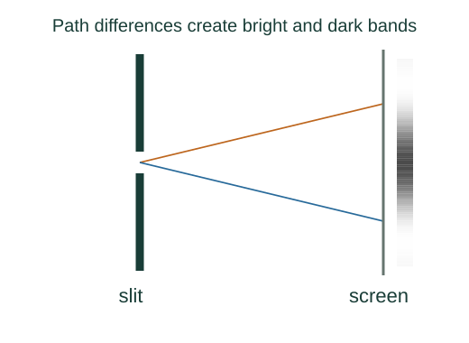

Derive the single-slit diffraction envelope
Different parts of a single slit emit coherent contributions with different travel phases. Their continuous amplitude sum produces a sinc-shaped diffraction envelope.
What the symbols mean
a: slit width; λ: wavelength; θ: observation angle; β: half of the edge-to-edge phase difference.
When this applies
Uniformly illuminated narrow slit, scalar diffraction, coherent light, and far-field (Fraunhofer) observation.
Developing the argument

Assign phase across the aperture
An element at transverse coordinate y has path difference y sin θ relative to the centre. Its phase factor is exp(iky sin θ), with k = 2π/λ.
Read the argument for these relations ↑Add all slit-element amplitudes
Uniform illumination gives equal amplitude per width element. Integrate from −a/2 to +a/2 and normalize by the zero-angle amplitude.
A closer lookWhy must small contributions be integrated? ↗Square amplitude to obtain intensity
Intensity is proportional to squared field magnitude. At β = 0 the limiting ratio sin β/β is one, not undefined in the physical result.
Locate noncentral minima
The numerator vanishes at β = mπ for nonzero integer m. A narrow slit spreads the first minimum farther from the axis.
A worked example
With a = 0.10 mm and λ = 500 nm, the first minimum is at θ ≈ 0.005 rad. On a screen 2 m away it lies about 10 mm from the centre.
Derivation behind this calculation ↗A point to keep straight
The centre m = 0 is the principal maximum, not a dark fringe. Finite-width double slits show interference fringes inside this envelope.
Check the assumptions and derivation ↗